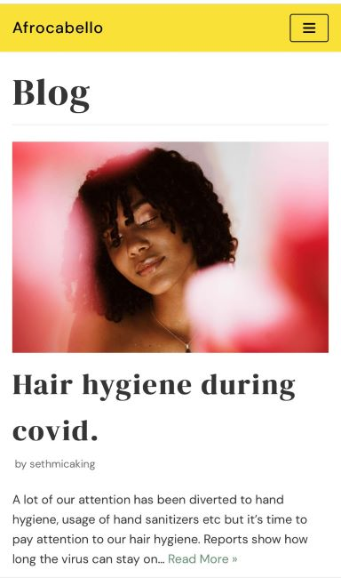

White Space and Clean Deisgn
The Afrocabello Store
For white space and clean desing, this website has some useful tips to make the important content in the text stand out. This means that careful attention has been paid to ensuring a pleasurable reading experience.
Visual Hierarchy
The What is blik

With the visaul hierarchy, images are more attractive and therefore more important. There is also a beautiful content slider becuase the most important are found there. This view also shows the relations of chart objects against each other in ranked order.
Alignment
Audiomack
Here we can see that the site retains a solid consistency of how it displays titles of songs, the views, the likes, the shares and how the profile pictures are aligned. This is brilliant because all headlines and other content elements are cohesive across the sprawl of this site.